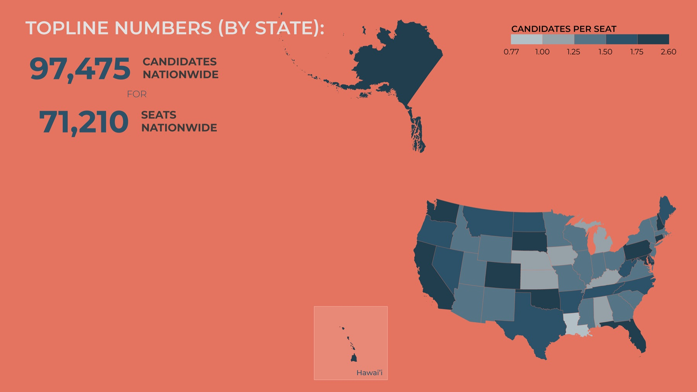
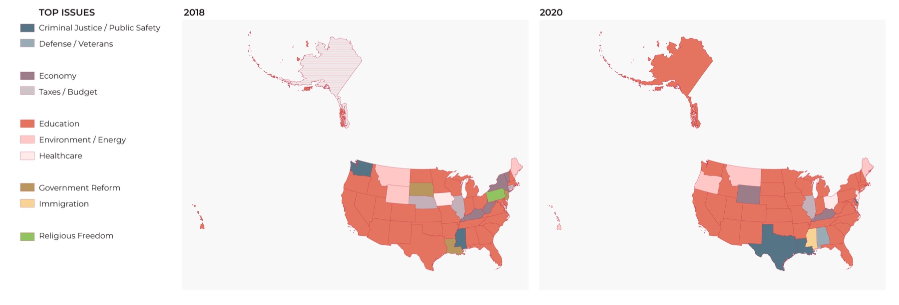
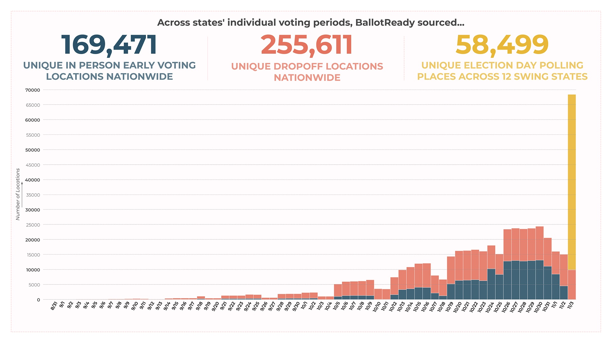

Earlier workBallotReady · 2020 · Mapping
Election data for 5M voters
BallotReady is a nonpartisan voter guide used by more than 5 million people in 2020, and by brands like Snapchat, TikTok and the Miami Heat. Its data had to say exactly where and when people could vote.

01Context
Every local election office publishes voting locations and hours its own way. A voter guide has to turn all of it into one dataset people can trust.
02Approach
- Verification of hundreds of early voting, absentee and polling place locations and hours for the 2020 general election.
- Charts for BallotReady’s reporting: top issues by state, what’s on the ballot, and how people could vote.



03Outcome
5M+voters used the guide in 2020
Next project
wastespace

Say hello.
Working on something for the built environment? I’d love to hear about it.
© 2026 Shakira Tola OniyangiBack to top ↑